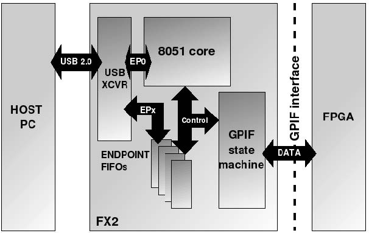

USB 控制器 FX2 问题
断言: USRP 代码 "通过 USB 接口以数据流的形式进入系统" 的方式来处理设备对象，对吗？
基本正确，但略复杂于此。USB 支持三种传输方式：命令、海量读写和同步 (isochronous) 方式。使用命令栈(command packets)来配置 USRP、装载固件（firmware）及 FPGA 微码等。标识符 endpoint 0 被用来表示此接口。另外，使用其它的两个 endpoints，一个用于数据输入流另一个用数据输出流。源于 USB 传输支持高速传输，这些 endpoints 也可用于标识海量传输。建议到如下站点 USB 2.0 specification 去阅读第九章的 "USB Device Framework"。它包含构建一个 USB 外设所涉及的大部分知识。
FX2 支持多少端口（endpoints）?
FX2 支持的 endpoints 是有限的。详细可参阅 CY7C68013 Datasheet. 的第 15 页。在此使用的 endpoints 2 和 6 是“四重缓存”（"quad buffered"）, 也就是 4 512 byte 缓存。其一用于 Tx 数据，另一用于 Rx 数据。略施小计可将其扩展为 endpoints 2, 4, 6 和 8、“双重缓存”（"double buffered"）, 也就是 2 512 byte 缓存。这样一来便有 4 簇海量 endpoints（当然报以低速和导致性能不佳的时延）。
研究 tx_buffer 功能块时发现该功能块交错地发送数据（2 x I 通道、2 x Q 通道）。这理解对吗？
它构建了 FX2/FPGA GPIF 接口的发送部分。也担当分离将被发出的数据然后把它送往合适的 DACs 部分。
FX 重构输入/出 FPGA 的 数据吗？
没，FX 没有对入出 FPGA 的数据重构，FPGA 自身负责构建所有数据的类型。FX2 的固件同海量的数据入出没有任何关系。数据传输是依靠 DMA 方式掌控 GPIF 同 FPGA 的 USB 缓存之间的转换来实现的。
还有，输入信号 bus_reset 的注释部分，有如此声明 （“Used here for the 257 hack to fix the FX2 bug”）。这里的 bug 是指什么？
在 FX2 中，WR 的时序应当比其原本多一个系统时钟（On the FX2, the WR pulse is asserted one clock longer than it should be）。
如若延循曾误解 write_count 寄存器的功用的思路。那么它实际上是如何工作的？WR 是在来自 FX2 的 16 位数据包准备到位时触发，是这样理解吗？ （I think that along the way I misunderstood the purpose of the write_count register. How does it actually work? WR triggers every time a 16 bit packet is ready from the FX2 doesn't it?）
FIFO 的 wreq 触发器是由 (WR & ～ write_countr8) 触发的。这是否意味着在 WR 有效（为真）之前仅 256 个 16 位的采样被写入 FIFO ？为何如此这般？该如何准确确定何时已有必要写入 FIFO 中的 I 或 Q 采样？（The wreq trigger of the FIFO is triggered by (WR & ~write_countr8). Does this mean that only 256 16 bit samples enter the FIFO before the WR is removed? Why is this? How could I determine exactly when there is I or Q sample that must be written into the FIFO?）
wrreq 决定 FIFO 何时候应该给 FIFO 写数据。也就是，当 (WR & ～ write_countr8) 为真时写入。但当 WR 一旦确定（为真），计数器并没有 0x100 设置位。据笔者回忆，WR 依据一个额外时钟周期，计数器利用其进行触发。（wrreq tells the FIFO when data should be written to the FIFO. So, we write when (WR & ~write_countr8). That is, when WR is asserted, but the count does not have 0x100 bit set. As I recall, WR is asserted an extra cycle, and the counter trick works around this.）
当 FX2 一旦诊断出 FPGA 上有 have_space（管脚有请求时），便传送 1 个完整的缓存的 USB 数据包到 FPGA，然后再询检管脚它（have_space）是否还为真，（这样便可持续向 TX 输送数据），这理解对吗？（When the FX2 detects the have_space pin on the FPGA, does it transfer 1 entire buffered USB packet to the FPGA, then re-check the have_space pin, right?）
是这样的。Have_space 用来判断 FPGA 是否能够接收更多的数据包，它是通过持续填充 FX 来实现这点的。（重复...）管脚 have_space 是被 FX2 用来判断 FPGA 的 FIFO 能否存储至少一个以上的数据包的。（Yes. Have_space is used by the feeding FX2 to know if the FPGA can handle one more packet. The have_space pin is used by the FX2 to know if the FPGA FIFO can store AT LEAST one more packet.）。
前一个 512-byte 的最后一个 byte 的数据包被写入 FPGA 距离下一个 512-byte 的第一个 byte 的数据包是否有一个时钟的时延，这样的推理正确吗？（Would it be reasonable to assume a 1 clock delay between the last byte of one 512-byte packet being written to the FPGA and the first byte of a second 512-byte packet being written to the FPGA?）
正确。FX2 通过软件查询管脚。在此数据包之间至少有 100 ns 的间隙，或许远不止此（Yes. That shouldn't be a problem. There's software inside the FX2 that polls the pin. You've got at least 100 ns between packets, probably more. ）。
任何阐述 USRP 主板上的 EEPROM 的资讯？
主板目前采用 “C2" 格式 EEPROM 的数据，这样一来通过代码便可以在上电之初使 9862‘s 处于某种程度的低功耗状态。有关 FX2 的 Boot 的 C0 和 C2 格式的详述可参阅如下：
Technical Reference Manual - EZ-USB FX2 （或 FX2 Technical Reference Manual.）
主板上的 EEPROM 存储着一些 USB 信息、一些十分简单的代码使得在上电之初将系统置于低功耗状态。同时使得其中一个 LED 闪烁加快。一旦着手在 USRP 运行任何应用时，一个完整的固件（它远大于 EEPROM 所能承载）便通过 USB 总线被载入。
USRP 上的 Cypress EZ-USB FX2 USB 控制器 的工作原理？
从如下几个方面着手：
1) 资料：EZ-USB® FX2™ USB Microcontroller - CY7C68013 （或官方站点 Official documentation）
2) 在如下网页可以找到 - source:usrp/firmware/src/usrp2 主控程序 usrp_main.c (使用 SDCC 对基于 FX2 USB 内的 8051 的编译的固件)
3) 下面的循环展示主控程序 source:usrp/firmware/src/usrp2/usrp_main.c 所涉及（检查）的内容
main( )
{
Initialize USRP - 初始化 USRP
Initialize GPIF - 初始化 GPIF
Patch USB Descriptors (read from EEPROM, set HW device ID) - 补丁 USB 描述符（读取 EEPROM、设置硬件设备标识 - HW ID）
Setup Autovectors - 设置 Autovectors
Install USB Handlers - 安装 USB 句柄
Re-enumerate - 重新枚举
Run main_loop( ) - 运行 main_loop( )
}
main_loop( )
{
Check for USB setup packets - 检查 USB 配置包
Check and log the RX Overruns and the TX Underruns - 检查并记录 RX 链路过载以及 TX 欠载
Check for packets to send back to host - 查看数据包返送本机的性能
Check for packets to send to FPGA - 查看数据包送往 FPGA 的性能
}
4) USB 端点 - USB Endpoints:
不同的 USB 端点 (USB endpoints - EP) 是用来从逻辑的角度来分离总线上的数据流的操作。如前所述在 main_loop() 中用到 3 个 USB 端点。
| Endpoint （端点） | Description（描述） |
| 0 | Control/status （控制/标志） |
| 2 | Host -> FPGA |
| 6 | FPGA -> Host |
5) USB 的数据传输总是以 512 Byte 为单元。所有的控制信息都使用 endpont 0 和一些制造商提供的命令编写的。这些命令分为两大类：VRT_VENDOR_IN 和 VRT_VENDOR_OUT。这些都在函数 app_vendor_cmd( ) 中体现。详细信息请参阅如下站点：
source:usrp/firmware/src/usrp2/usrp_main.c.
所有的 FPGA 和 FX2 控制器之间的通信是通过 SPI 来控制的。子板一般都由诸如：VRQ_I2C_* 和 VRQ_SPI_* 命令来掌控。
6) VRT_VENDOR_IN 命令类:
VRQ_GET_STATUS GS_TX_UNDERRUN GS_RX_OVERRUN VRQ_I2C_READ VRQ_SPI_READ
7) VRT_VENDOR_OUT 命令类:
VRQ_SET_LED VRQ_FPGA_LOAD FL_BEGIN FL_XFER FL_END VRQ_FPGA_SET_RESET VRQ_FPGA_SET_TX_ENABLE VRQ_FPGA_SET_RX_ENABLE VRQ_FPGA_SET_TX_RESET VRQ_FPGA_SET_RX_RESET VRQ_I2C_WRITE VRQ_SPI_WRITE
USRP FX2 的工作原理？
FX2 控制器中包含一个嵌入式的 USB2.0 收发器来处理所有的 USB 同其上位宿主机之间的传输。它表现为一个同外部世界（在此言指 FPG）相连的数据总线，它具有通过编程可定制控制的通用控制信号。此接口便是 GPIF（General Purpose Interface）。
FX2 也可以（通过 endpoint 0 来）掌控所有的 USB 控制请求，所要求的是所有的具有 USB 功能的设备必须完全兼容并支持 USB (协议)标准。也包含对设备诊断的反应以及（协议）标准的配置的请求。
FX2 内部原理框图如下（由 Kalen Thesis 提供）

FX2 的工作原理简图如上所示。它包含一个工业标准级的用于处理所有的内部控制的 8051 控制器的核（一些功能的延伸和性能的提升）。此 8051 对实际掌控 USB 工作的收发器进行初始化；同时也肩负配置 FX2 的通用 I/O 端口（上图未显示）和 GPIF 的状态机。USB 的数据传输是通过端口（endpoints）实现的，其机理类同以太网的套接字(socket)。每个端口（endpoints）必须明示数据流方向，或者是 IN 或者是 OUT（以 USB 为核心），但端口 0 （ endpoint 0 ）是唯一的例外，它可以双向传输。端口还必须明示其传输的数据类型以昭其对带宽的需求。
数据入出 USB 宿主（控制器 FX2）侧被存储在 FIFO 的端口（ENDPOINT FIFOs），它可被配置成各种大小和各种级别的缓存方式。GPIF 可以直接读取这些 FIFO's，这使得数据可以在外部设备和 USB 宿主之间通过系列的 FIFO 缓存器实现无缝传输。
如何理解 FX2 固件?
除日常常规的杂务和配置之外，FX2 固件还肩负如下责任：
- GPIF 初始化：不只仅仅是试图以 USB2.0 高速(480MBits/s) 直接进行数据传输，GPIF 主要承载数据的传输。 FX2 的 8051 核对该接口实施初始化。
- USB 控制请求处理：8051 核处理来自 USB 宿主通过 endpoint 0 的控制请求。所有的 USB 兼容设备对此类的标准（译者注：USB 2.0 标准）请求依据标准回应（比如，通过 GetDeviceName 之类回馈设备的描述）。
- USB 传输请求：这通过构建轮询循环（polling loop）来实现。当或需要接收到来自宿主（host）的请求时，它便载入 GPIF 承载传输参数的配置寄存器。FX2 固件是通过 C 语言编写，并由开源编译器编译的，这编译器就是 SDCC (Small Device Cross Compiler)。其内嵌的功能是通过使用 usrp_basic 及 usrp_prims libraries 来实现的。
FX2 GPIF 的功用?
GPIF（General Purpose Interface）的构建使得 FX2 能够简单地同多种不同的设备接口。本质上，它是带有一组由可配置状态机控制的通用控制信号的双向数据总线。GPIF 可被配置成总线主设备（bus master）或受设备驱动的总线从设备（bus slave）。GPIF 作为总线主设备的情况，有六个状态可被用来描述一个特定任务的时序（waveforms）。依据通用控制电平的大小（the values of the generic control lines）通过决策点（decision points）决定其状态的转换。
下面是其四种可供选择的描述特定任务的总线时序：
- 只写（Single Write）: 该总线时序完成将一个单独数据从 USB 写到设备的过程（所有的过程都是以 USB 作为中心）
- 只读（Single Read）: 该总线时序完成将一个单独数据从设备读到 USB 的过程
- 先入先出读（FIFO Write）: 该总线时序基于预先的配置参数完成对一组数据的写的过程。在这些数据的传输过程中可能会受到接收设备的阻塞。
- 先入先出写（FIFO Read）: 该总线时序完成从设备对一组数据的读的过程，它可被用来读取 ADC 的数据流到宿主计算机。 下面是一个简化的 GPIF FIFO Read 时序图。
GPIF 时序例图 (源于 Kalen Thesis 提供)

GPIF 具有六个控制信号输入 RDY5:0 和六个控制信号输出 CTL5:0。这足以使其总线控制时序呈现基于标准的多样性及专属性。如上图所示，位于 state 1 的决策点（decision points）将保持其原有状态（stalled state）直到 RDY0（在此其诠释 FIFO 空标志）将其释放。与此同时 GPIF 状态机便转入 state 2 并且将此时呈现在数据总线的数据捕获。FX2 通过内部端口（internal endpoints）以 EP0、EP1、EP2、EP4、EP6 及 EP8 形式构建 USB 的端口（endpoints）, 它可以通过多种方式被配置来适应应用程序对缓存的需求。EP0 通常被配置成一个 64 byte CONTROL endpoint；EP1 仅可能被配置成一个 BULK 或 INTERRUPT 类型 (它也是 64 bytes)。其余的可被配置成最大容积 4K 的双倍缓存、三倍或四倍缓存。正是通过这种方式，数据得以能够持续的流入或流出宿主设备，在恰当的时机便能够提供恰当的流控制。
Cypress Semiconductor 提供一款先进的 GPIF 设计工具，GPIF Designer。它可以通过图形界面对 GPIF 状态机进行设计。该软件允许用户对状态机进行定制设计，随后生成配置及初始化用的相应的代码，这些代码可被融合到 FX2 核心固件中。它使得配置 GPIF 状态时序寄存器这种需要繁琐的人工编程的工作得以简化。针对 USRP 情况而言，开发人员选择对 GPIF Designer 产生的代码进行语法分析（Parse)，并添加他们自己的初始化例程。该项工作被中途搁置，原因是 GPIF Designer 产生的代码模糊不清（它招致的代码问题制约着 GUN Radio 研究小组的进程）。
在 USRP 内部，GPIF 的工作独立于 FX2 8051 的核，其工作原理是通过对内部先入先出端口寄存器（internal FIFO endpoints）读取数据，然后相应地将数据写入 USB 宿主设备中，相反过程是将 USB 宿主设备中读取的数据写入到 FIFO 端口中。在程序中 FX2 接口的工作机理是通过 usrp_prims 和 usrp_basic 的源码及一些头文件（header files）来体现的。
Usrp_prims 定义了一组用来扩展 USB 各种通用功能的函数，该函数组是基于针对 FX2 如何回应 USB 的端口 endpoint 0 的产生的控制请求的目的来构建的。这些函数的参数（function primitives）通常担当从 FX2 各种寄存器里读取或写入数据的角色，及充当通过 GPIF 来引导或初始化数据的传输的功能。
Usrp_basic 提供了一个面向对象（object-oriented）的程序构架下来使用函数组 usrp_prims 的简单的 API 接口。以系统眼光来看，该接口展示较高层面的功用同时也将其大多数底层机理隐藏起来。
软件工具 usrper 的功用？
这是一款数据流测试的软件。它可用于装载 FPGA 配置用的数据（串行地将数据载入 FPGA 位表配置列表中），确认 USRP 诊错指示灯，及对 USRP 进行数据的读写操作。
在启动之初，usrper 首先试图建立一个能够同有效 USRP 设备进行通信的接口对象（interface object）。这将生成一个通用 USB 设备句柄，通过遍历（traverses）所有同 USB 连接的设备，寻找 FX2 的厂家及产品 ID 信息（分别对应 0x04B4 及 0x8613）。一旦发现一个已经上电、但未配置的 FX2 设备，usrper 便会通过将 GnuRadio 固件载入该 FX2 设备中进行系统配置，同时该固件用重新定义过的的厂家及产品 ID 信息覆盖设备原有信息并通过软件复位方式进行初始化，所有这一切会导致该 FX2 同宿主 PC 设备的断开及再连接。
这个过程被称之为重枚举（re-enumeration），Linux 内核这时便可认可一个产品及厂家 ID 分别为 0xFFFE 和 0x0002 的 USB 类型的 USRP 设备。它同经由 FSF 开发并配置的 USRP 的（逻辑上的）设备相对应。
完成上面这些步骤之后，通过调用 USRP 关联的函数调用（function method)便可对其读写及控制请求。
控制请求 - Control requests
通过 USB 端口（endpoint）0，对 USRP 系统的多个方面进行激活或者配置。固件呼应这些调用（所有的来自宿主设备的对 USB 控制请求以中断形式呼应）并对其进行响应。这些来自宿主设备的控制请求参数这时便会被载入或载出内部寄存器，通过这种对控制请求的呼应及响应便可达到扩展其原始的功用的目的。
以下载 FPGA 固件为例，通过端口（endpoint）0 将请求配置 FPGA 用的相关的参数以配置位表数据（bit stream data）格式载入。FX2 以字节（byte)形式呼应该数据流，以位操作形式下载到（bitwise）FPGA 的配置列表（Altera 公司的 EP1C12 FPGA 支持串行数据处理模式）。在呼应该处理控制请求的同时，FX2 固件也回送宿主设备相应的握手信号作为响应来展示对该原始控制请求的完整处理过程。
读取请求 - Read requests
USB 从 USRP 设备读取数据的请求是通过（被配置为以 512 byte 的海量输入模式的）端口 2 （endpoint 2）来实现的。FX2 呼应这些请求并基于这些控制请求参数修正并配置并保持 GPIF 状态机随后释放这些对 GPIF 的请求。
GPIF 一旦进入 FIFO 读状态便会将该状态保持直到数据传输过程完结或传输错误出现为止。FX2 固件以极其明晰的步骤呼应所有的请求并回馈握手信号对其呼应以响应。
写入请求 - Write requests
如同上面读取请求过程相似，宿主 PC 对 USB 的常规写入请求是通过（被配置为以 512 byte 的海量输出模式的）端口 6 （endpoint 6）来实现的。GPIF 配置 FIFO 写状态并保持该状态直到数据传输过程完结或传输错误的出现为止。
FX2 的底层接口库文件（USRP_PRIMS.CC）的功用？ - What does the FX2 low-level interface library (USRP_PRIMS.CC) do?
该代码库构建了一组同 FX2 的直接接口的底层函数。通过端口 0 将数据及各种控制请求传递给 FX2，相应地，数据的回传接收是通过端口 2（endpoint 2）。
FX2 的应用层接口库文件（USRP_BASIC.CC）的功用？ - What does the FX2 application-level interface library (USRP_BASIC.CC) do?
该代码库呈现出一个同 FX2 的高级接口。在 source:usrp/host/lib/legacy/usrp_prims.cc 内，它以面向对象的程序构架来调用函数。
何故采用 GPIF 模式？ - Why do we use GPIF mode?
通过 GPIF 模式来使用 FX2 的原因是通过 GPIF 接口数据的迸发速率可达 96 MB/sec。
USRP-FX2 接口 - 所有的控制对端口 0 （endpoint 0）的调用都发生在 FX2，同 FPGA 丝毫没有牵连，这样的断言正确吗？（USRP-FX2 interface - As I understand it, all control calls to endpoint 0 are handled within the FX2 and do not require the involvement of the FPGA, right?）
是，正确。
GPIF / FPGA firmware - 总共有几种 GPIF 时序配置（waveform configurations）?
两种：FIFORd 及 FIFOWr
FPGA 的配置明确地用到 FX 8051 核吗？ - Do you handle FPGA configuration explicitly using the FX 8051 core?
FX 8051 采用 Bit-Banging 技术来处理 FPGA 的配置。
敬请告知描述 GPIF CTLx/RDYx 电平及时序的 FX2 源码的位置？
工具使用的是 Cypress GPIF designer。详情请参阅：source:usrp/firmware/src/common/gpif.gpf.
如何将使用速度可达（480Mbit/sec）的 USB 2.0 的 USRP 改制为使用全速仅达(12Mbyte/sec) 的 USB 1.1。在这里 USB 1.1 是以 64 byte 构建数据包；相应的 USB2.0 使用 512 byte 的数据包?
或许需要修改部分固件。而且需要将其抽取到很低的数据速率，这样便不会产生溢出。
注：有关 USRP 使用 USB 1.1 请参阅补丁（patch）。
实施如上建议的修改，似乎不难看到数据的产生，但其格式还是 64 bytes，然后便有 5 microseconds 的“难产”。现象催生如此疑问“PC 无法通过 USB 进行快速数据处理”。也自然产生下面联想“有无可能在 FPGA 动手从 FX2 读取数据之前先将 FX2 芯片内的缓存填满？”。
问题的解决是通过 FX2 代码将数据块传输大小的格式设置成 64 bytes。原因是，宿主 PC 机以 64 byte 发送数据，但未经代码修改的 FX2 却无视数据的真实大小的格式，仍以原来的 512 bytes 的格式进行数据（接收）处理。在此强调在以 USB2.0 为约定的传输协议中，GPIF 的配置参数是 DMA 256 16-bit。这或许也是需要被修改的部分。这些神奇的参数有可能隐藏在 usrp_gpif.c 的 WaveData 表格中。
还有一件必须处理的事情是将 GPIF 配置为非流畅（non-flowstate）模式。这可以通过使用 Cypress 的工具来完成（或者使用 Larry Doolittle's perl 代码？）。 它可使数据传输处于全速。在这种情况下，FX2 同 FPGA 之间的 96 MB/sec 的迸发速率没有必要.
使用 Cypress 工具来研究 GPIF 原理，没有发现任何关联数据传输大小的格式的地方。断言其配置是由 FPGA 完成，对吗？
不对，这种理解是错误的。正确的理解仍旧是 GPIF 负责数据传输问题。这种现象产生的原因是在系统程序被规划完善后呈现出的 FX2 以 256 为单元迸发式数据传输的现象。在此换个话题，这类问题的解决是离不开 逻辑分析仪（笔者的观点）。GPIF 总线当时到底发生什么问题？（将 GPIF 相关管脚或针通过接插件延伸到子板的测试点上）
查阅 FX2 技术参考手册（或者尘封的记忆）的第 10-16 页（10.3.2.2.2 的决策点部分 - 10.3.2.2.2 Decision Point States）便不难发现时序决策点是由“事件计数复位 - Transaction Count Expired”信号来控制的。在第 10-24 页所描述“逻辑功能寄存器”，TERMA 及/或者 TERMB，是由代码表现为 RDY5 （这便是所谓的事件计数复位 - Transaction Count Expired，或者 GPIFREADYCFG.5 = 1）。有关“事件计数 - Transaction Counter”详情请参阅第 10-41 的第 10.4.3.1 部分。
欲意将事件计数（Transaction Counter）用于 FIFO "x"，载入带有欲处理事件数的参数的 GPIFTCB3:0 便可。一旦 FIFO 在时序上触发 FIFO-READ 或 -WRITE，GPIF 便会将特定数目的字节 - byte（如若 WORDWIDE=1 字节在这里便是一个字 - word)。
详情请参阅下面的 ### HERE ### 部分 (代码源自于 source:usrp/firmware/src/usrp2/usrp_main.c):
在这里将 256 改为 32 了吗？没，这或许正是问题所在。
// Next see if there are any "OUT" packets waiting for our attention, - （下面查看是否有任何“OUT" 数据包待处理，）
// and if so, if there's room in the FPGA's FIFO for them. - （若如有，查看 FPGA 的 FIFO 是否有空间。）
if (g_tx_enable && !(EP24FIFOFLGS & 0x02)){ // USB end point fifo is not empty... （USB 端口 fifo 非空闲 ...)
if (fpga_has_room_for_packet ()){ // ... and FPGA has room for packet ( ... FPGA 有空闲空间）
GPIFTCB1 = 0x01; SYNCDELAY; ####### HERE #######
GPIFTCB0 = 0x00; SYNCDELAY; ####### HERE #######
setup_flowstate_write ();
SYNCDELAY;
GPIFTRIG = bmGPIF_EP2_START | bmGPIF_WRITE; // start the xfer
SYNCDELAY;
while (!(GPIFTRIG & bmGPIF_IDLE)){
// wait for the transaction to complete （等待处理过程的完结）
}
}
}
// See if there are any requests for "IN" packets, and if so （下面查看是否有任何“IN" 数据包待处理，）
// whether the FPGA's got any packets for us. （查看 FPGA 是否获取任何数据。）
if (g_rx_enable && !(EP6CS & bmEPFULL)){ // USB end point FIFO is not full... （USB 端口 FIFO 尚存空间...）
if (fpga_has_packet_avail ()){ // ... and FPGA has packet available (... FPGA 获取到数据)
GPIFTCB1 = 0x01; SYNCDELAY; ####### HERE #######
GPIFTCB0 = 0x00; SYNCDELAY; ####### HERE #######
setup_flowstate_read ();
SYNCDELAY;
GPIFTRIG = bmGPIF_EP6_START | bmGPIF_READ; // start the xfer （传输开始）
SYNCDELAY;
while (!(GPIFTRIG & bmGPIF_IDLE)){
// wait for the transaction to complete （等待处理过程的完结）
}
SYNCDELAY;
INPKTEND = 6; // tell USB we filled buffer (6 is our endpoint num) - 告知 USB 缓存满 （端口编号 6）
}
}
除非很幸运对 ####### HERE ####### 做过修改，逻辑分析仪便是解决此类问题的必由之路。
欲意编写用于 Windows 及 USRP 的 USB 驱动；何处查找有关 USRP 的 USB 资讯。
请参阅:
source:usrp/firmware/include/usrp_interfaces.h
source:usrp/firmware/include/usrp_commands.h
可有人知悉何处可以获得有关传输在接口（interface）0，1，2（或者 ep0, ep2 及 ep6) 上 USB 的数据结构的文档资讯来帮助人们来构建它们。ep0 数据结构被认为是缺省的控制流程管线（control pipe）上的 USB 设备请求用的构架，同时也有人认为比起标准的 USB 有更多的控制请求。
另外一个问题是，vendor id 是一个规则极其混乱的设备类型标识。这会使人产生疑惑，如何确认所连接的设备是被确认的 USRP 设备；进而令人颇感疑惑的是如果连接 FX2 芯片的设备被确认是非 USRP 设备而且也未初始化，如何进行“是同 FX2 连接"的确认、"是同 USRP 设备"或"同非 USRP 设备"的连接的确认？
所有交予用户的 USRP 设备上都烧结一个 non-Cypress USB VID/PID 。USRP 设备同一个未被程序化的 FX2 不应产生任何疑惑。USRP 规定：VID = 0xfffe, PID = 0x0002 。通过 DID 来进一步区分板块的版本号及固件（firmware）是否被装载。
所有交予用户的 USRP 设备上都烧结一个 non-Cypress USB VID/PID 。USRP 设备同一个未被程序化的 FX2 不应产生任何疑惑。USRP 规定：VID = 0xfffe, PID = 0x0002 。通过 DID 来进一步区分板块的版本号及固件（firmware）是否被装载。
详细资讯请参阅：source:usrp/firmware/include/usrp_ids.h.
下面链接中的一个头文件（.h files）几乎包括了所有的关于如何控制 USRP 的问题的回答
source:usrp/firmware/include.
更详细的请参阅；
source:usrp/firmware/include/fpga_regs_common.h
和
source:usrp/firmware/include/fpga_regs_standard.h
可获得 FPGA 中的配置用寄存器的功能定义。
如果对 USB 的底层编程技巧一无所知，如何驾驭 Linux 环境中的 Cypress 芯片的驱动问题。
无需任何驱动的编程，使用 libusb 便可。
如何确保在同系统相连时用户 USB 设备使用了恰当的驱动？
下面是些大致的步骤：
1.在 source:usrp/firmware/include/usrp_ids.h 中定义该 USB 的 PID（product ID）并使开发人员知悉这些。
2.更改 host/lib/usrp_prims.cc 使其不仅接纳常规 USRP 设备（的 PID）也接纳该 PID 。
3.使用 usrper i2c_write 为该 PID 所代表的 USB 设备编写 FX2 EEPROM 代码。
4.在 /etc/hotplug/usb/ 中添加 usermap 文档及初始化脚本（initialization script）。
对现有的 FX2 固件进行针对性修改以便用于测试的想法可行吗？
完全可行。可以先使用略加修改的 usrper 及 test_usrp_standard_rx 使得设备先动起来，然后便可基于各种库文件再构建其完备的针对性的可执行文件。
构建基于 USRP 的板件时，试图避免对 FX（8051）的源代码进行重新编译的想法是否可行。是否有途径可直接对 FX 寄存器进行写操作？可否将 CLK 的频率输出从缺省的 12 MHz 改为 24 MHz。
No command. No comment 无言相对! USRP 在载入固件之后 FX2 运行在 48 Mhz。
曾有这样说法，USRP FPGA FIFO 缓存（Buffers ）具有 2K 行（lines）的规模。这是否可以解释为 2048 位（bits）呢?
错，它是说 2K 行（2K lines），何况每行就有 32 位（bits）。FX2 对于发送（TX）及接收（RX）的缓存都采取四倍缓存（quad buffering）技术来构建，其缓存的大小是 512 bytes 。
USRP 在通过 USB 传输数据的过程中，参数 fusb_nblock 及 fusb_block_size 的准确含义?
参数 fusb_block_size 表述一个内核对用户空间（user-space）进行读写的以 bytes 为单位的最大传输空间。参数 fusb_nblock 表述一个在特定时间段内（相对应 fusb_block_size 所描述的最大传输空间的）最大传输数量。详情请参阅
source:usrp/host/lib/fusb_linux.h
及
source:usrp/host/lib/fusb_linux.cc
如果 USRP 仅存少量的数据（比如，数量远不足 fusb_nblock*fusb_block_size)，它是否仍旧会被 USRP 传输到计算机?
是的。USRP 以 USB 所规约的 512 byte 进行数据打包然后将其尽快传送出去。或者说 128 （byte）复合采样（16-bit I & Q）数据。
什么是 USRP 针对 USB 同宿主计算机传输数据时所需的最小数据格式？它是 fusb_block_size 吗?
其大小是 512 bytes。它是基于 FX2 固件对其进行配置。
Looking through the FX2 data sheet, the GPIF designer app's generated code and your edit_gpif script output, I (hope) I have an understanding of the actual data flow bus cycle (I am only focusing on FIFORd): You use flow states. There is a flowstate in state S1, which constantly asserts REN and OE (and BOGUS) while the transaction has not yet expired. It de-asserts all CTLx signals when the transfer is complete. USRP do data transfers on both edges of IFCLK. The FLOWSTB register indicates that CTL4 is your master strobe. I thought CTL4 was a reset signal (CLRST). To summarize: OE and REN are active-high, and data is clocked out on both edges of IFCLK. Is this correct?
Yes, modulo problem with signals being asserted one cycle too long on WR.
RDYx 的那些管脚的随状态机有影响？ - What part do the RDYx pins play in the flowstate?
没有。
它们（这些管脚 - RDYx pins）仅影响 S1, S2..S6 状态的转化吗？ - Do they only affect transitions between S1, S2..S6?
没，对此也无影响。